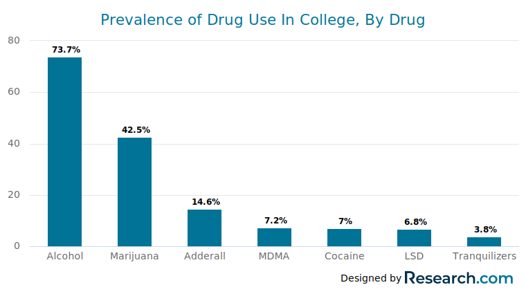
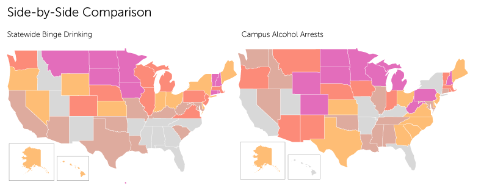
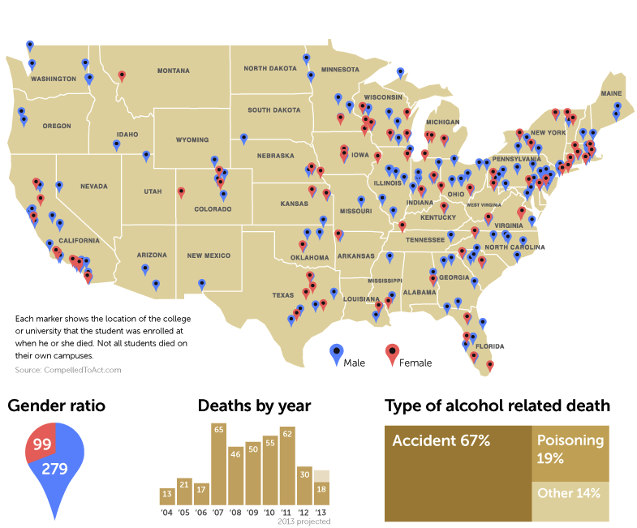

College Drug Use
By Kai and Cindy
These are the drugs typically consumed by college students,
seems like a lot right?

When we examine others in the same age group,
we see people are generally doing the same thing...
Prevelence of drug use, College vs Non-College
To gauge how big an issue excessive drug and alcohol use might be,
lets examine Universities across the US with the most drug/alcohol related arrests
On Campus Drug Arrests
This map appears to show random colleges that are hotspots for drug use but...
Upon comparing these hotspots with regional patterns, it becomes apparent that drug usage at
a particular university is often strongly correlated with the norms of the surrounding region.

Finally, lets examine deaths from college realted drinking incidents

These numbers may seem high, but in the most deadly year we see a death rate of only 0.003%
This compared to the general population, which has an anual alcohol related death rate of 0.05%